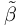

Simulate with complex geometries and complex physics
DarcyConstant
coupling parameter for porous media [kg/(s*m^3)]
Define the DarcyConstant  for the material with index $Material$ :
The law of Darcy models the influence of a porous medium A on a fluid B that flows through A by the addition of a momentum source term to the standard fluid flow equations of B. See EquationsToSolve for the integration of this source term to the momentum equation and TwoPhaseDarcy for a more specific example of using Darcy within MESHFREE.
The DarcyConstant regulates the permeability of the porous medium and thus influences the magnitude of this source term.
then the porous material is assumed to be isotropic. Thus, in EquationsToSolve can be viewed as a scalar quantity.
In this case in EquationsToSolve represents a matrix which is constructed from the supplied constants and directions.
DarcyConstant($Material$) = RightHandSideExpression
Isotropic materials
If in the RightHandSideExpression one argument is given, e.g.
DarcyConstant($Material$) = ( 1e3 ) # constant Darcy constant of 1e3 kg/(s*m^3)
Anisotropic materials
For anisotropic permeability, the DarcyConstant can be set for three perpendicular directions. The RightHandSideExpression then takes twelve arguments, e.g.
DarcyConstant($Material$) = ( &bx&, 1, 0, 0, ... # Darcy constant in x-direction, unit vector x
&by&, 0, 1, 0, ... # Darcy constant in y-direction, unit vector y
&bz&, 0, 0, 1 ) # Darcy constant in z-direction, unit vector z
Inertial contribution
To extend the Darcy model by an inertial contribution, see ForchheimerConstant.Notes
- Despite the naming convention, %ind_betaDarcy% will not store , but
 in EquationsToSolve
in EquationsToSolve